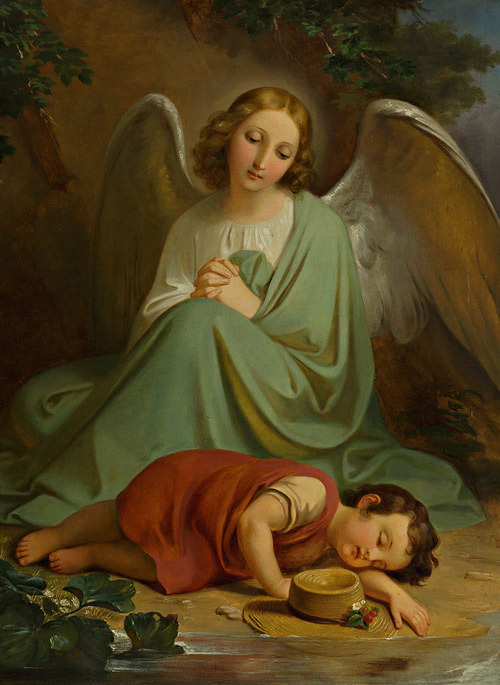
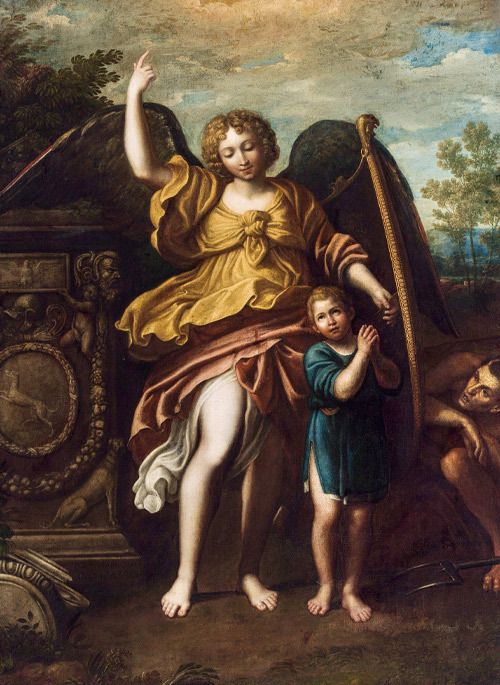

“Para todas as pessoas que vivem há um Anjo da guarda. Por isso ninguém se encontra sozinho" São Padre Pio
Os Anjos são mais numerosos que os homens?
Ao criar, Deus teve em vista “a perfeição do universo como finalidade principal”, pois tinha intenção de espelhar o supremo Bem, ou seja, Ele mesmo. Por isso, fez em maior número os seres mais elevados.
Perto do número de Anjos, todas as estrelas do firmamento não passam de um punhadinho de pedras preciosas.
Todos os homens – desde Adão até o último a nascer no fim do mundo – são poucos em relação às miríades de puros espíritos que espelham tão perfeitamente o Criador dos homens e dos Anjos.
É com grande veracidade que Dionísio confessou humildemente: “Os exércitos bem-aventurados dos espíritos celestes são numerosos, superando a medida pequena e restrita de nossos números materiais”.
Quem são os Anjo da Guarda?
Postado em 21 de Março de 2025 por Arautos do Evangelho

Os Anjos da Guarda são seres espirituais enviados por Deus para proteger e guiar cada ser humano ao longo de sua vida.
Essa crença tem base na Tradição Cristã e na Sagrada Escritura, sendo um dos pilares da Fé Católica.
Desde os primeiros séculos do Cristianismo, a Igreja ensina que cada pessoa tem um Anjo da Guarda pessoal, cuja missão é conduzi-la no caminho da salvação e protegê-la das ciladas do inimigo.
Esses Anjos não interferem no livre-arbítrio humano, mas estão sempre prontos para auxiliar aqueles que pedem sua intercessão.
Oração Clássica ao Anjo da Guarda
Postado em 21 de Março de 2025 por Arautos do Evangelho

A oração tradicional ao Anjo da Guarda é curta, fácil de memorizar e pode ser rezada a qualquer momento do dia. Seu texto é o seguinte:
“Santo Anjo do Senhor, meu zeloso guardador, se a ti me confiou a piedade divina, sempre me rege, me guarda, me governa e me ilumina. Amém”.
Essa oração expressa confiança e entrega à proteção angelical, pedindo que o Anjo da Guarda esteja sempre presente, guiando cada passo do fiel.